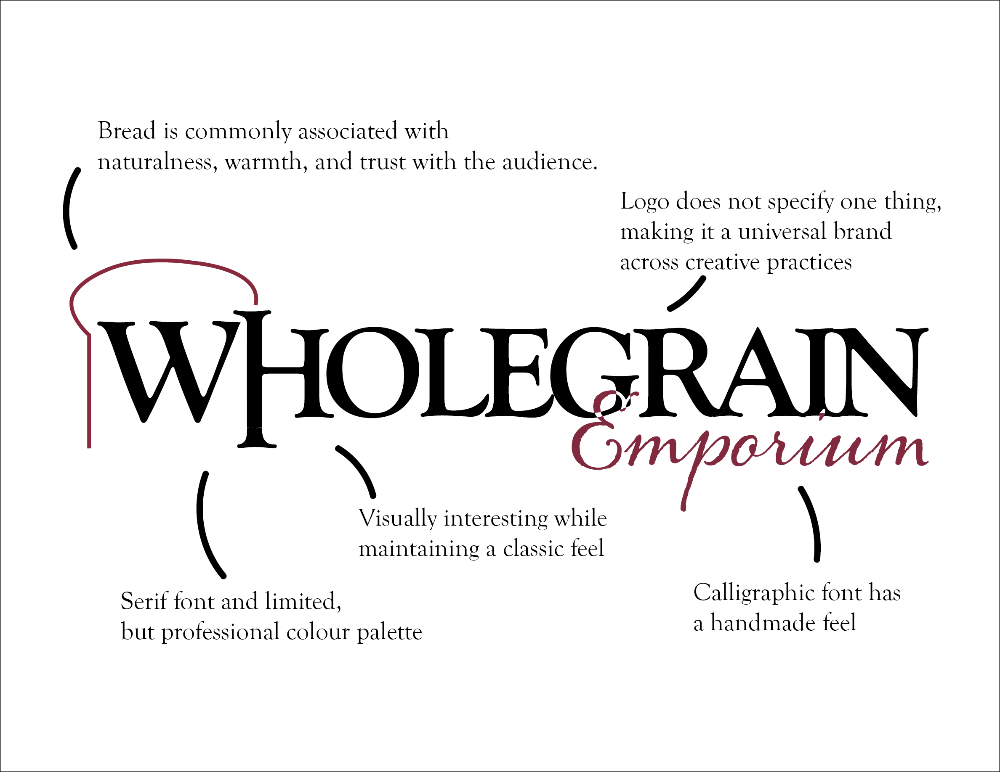
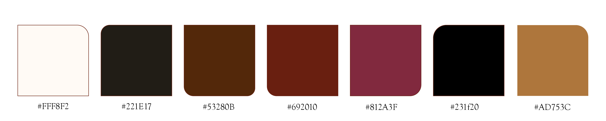
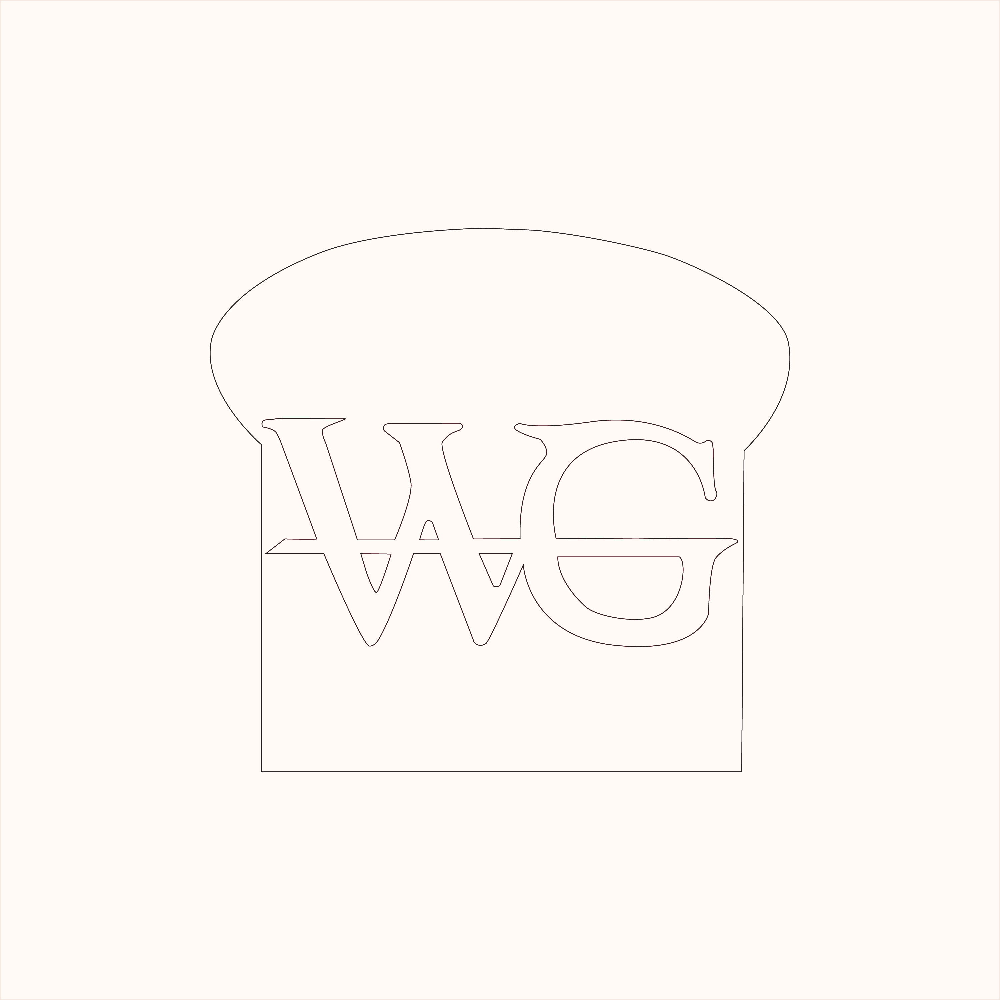
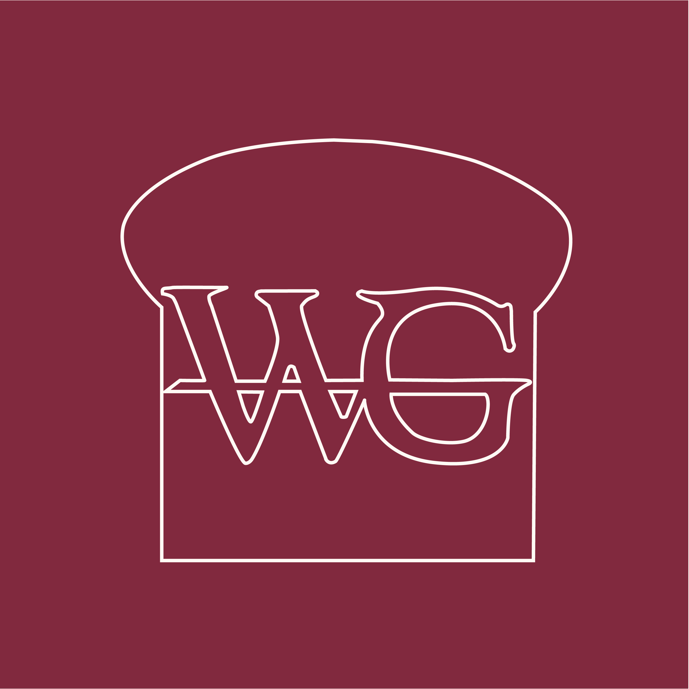
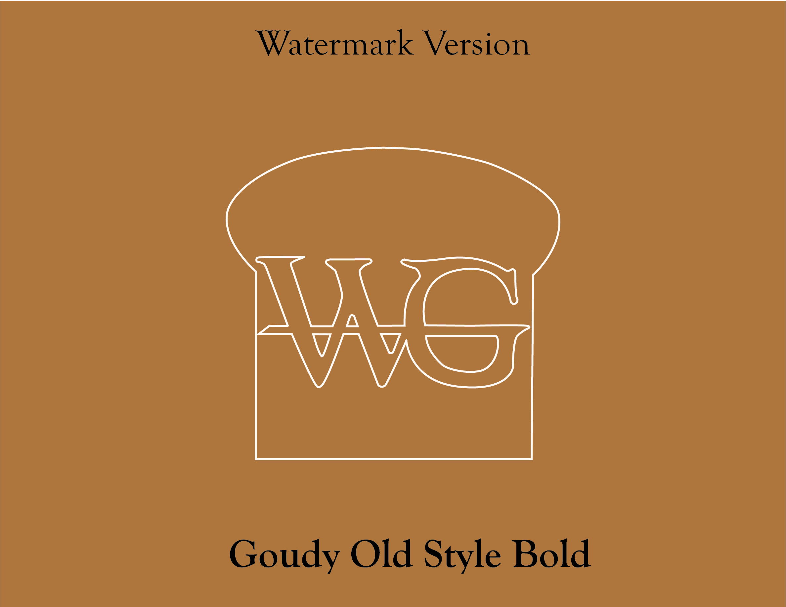
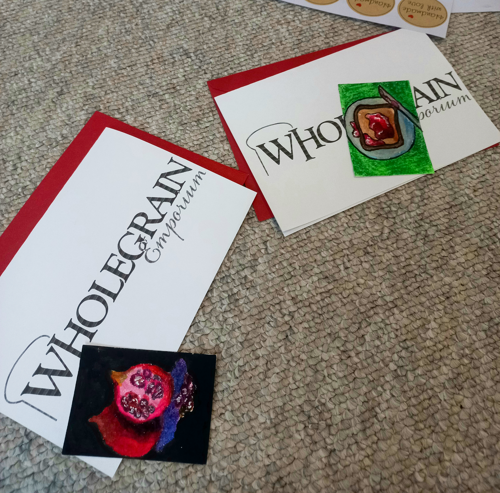
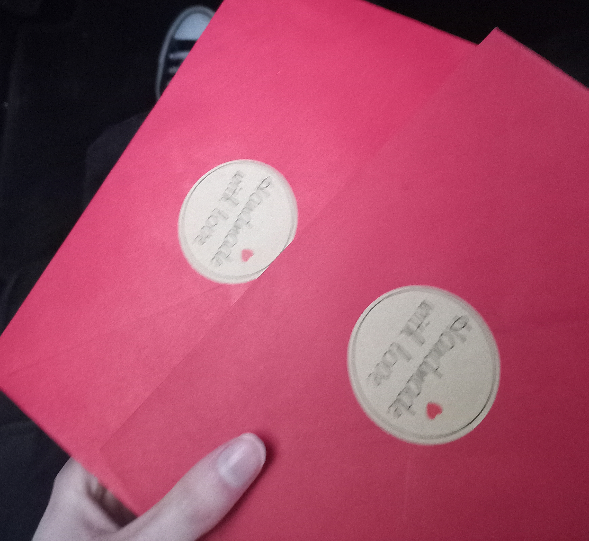
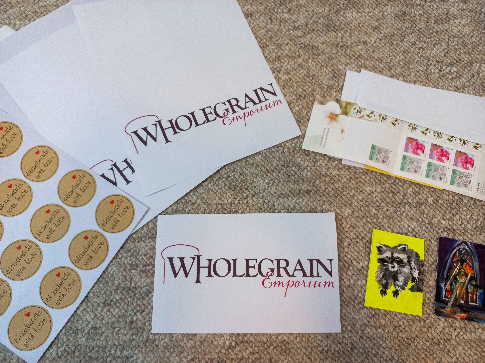
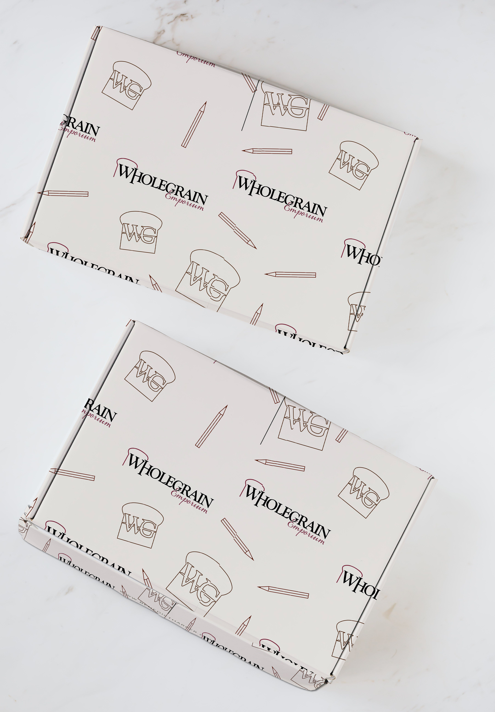

WHOLEGRAIN
EMPORIUM
Brand identity, composition, and product packaging.
Wholegrain Emporium is an independent creative studio brand focused on producing collectible miniature artworks, illustrated prints, and commissioned digital pieces. The identity is designed to function cohesively across physical goods and online platforms, creating a scalable and recognizable creative presence.
The name originated as a play on my last name, Rice, and evolved into a broader concept representing complete, unrefined, and authentic creative expression. “Wholegrain” suggests naturalness and substance, reflected in my painterly style and handcrafted approach to content creation. Below I've attached a branding carousel, along with logo varients and business cards.
For the logo and word mark, i went with a traditional serif font, of Goudy Oldstyle Bold, and then added an accent of Alana Regular. I wanted my workmark to have some flare, so I had to decide which letter would get redesigned. I decided to loop the E around the G with negative white space, then elongated the H to nearly the descender height of the bread surrounding the W, which was lengthened to meet the baseline.
The target audience includes independent art collectors and individuals who value artisan, character-driven creative goods. To appeal to this audience, the brand identity draws from traditional watermarks and vintage print aesthetics, incorporating classic serif typography, a jewel-toned palette centered on burgundy and black, and a stylized bread motif, symbolizing warmth and craftsmanship.









